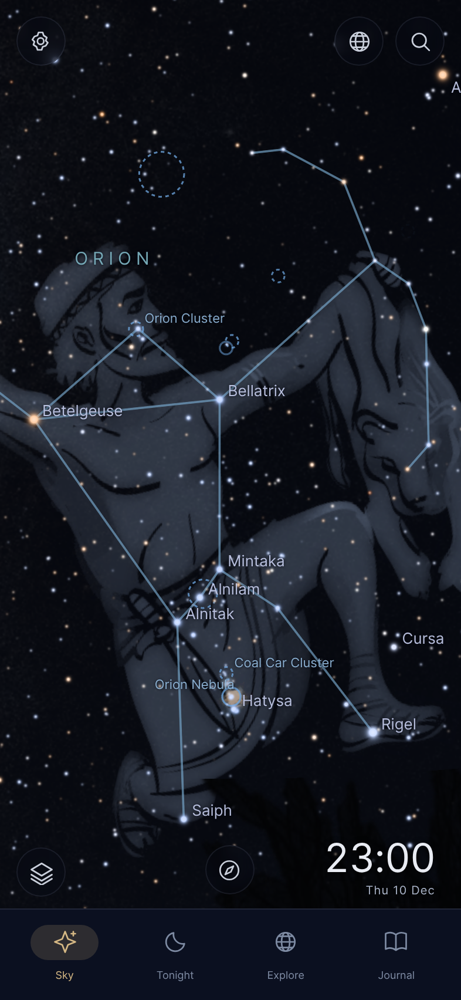
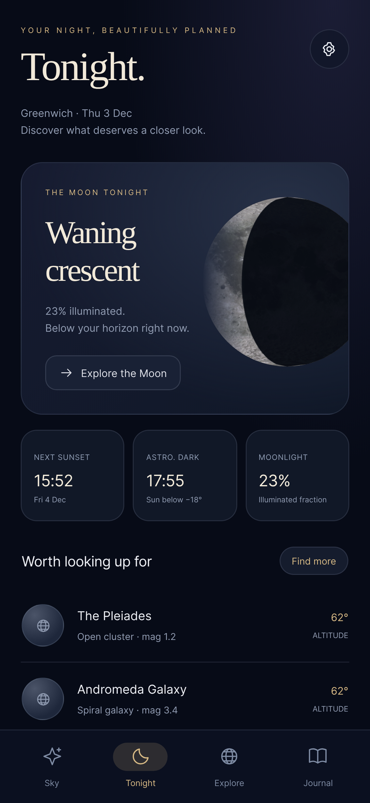
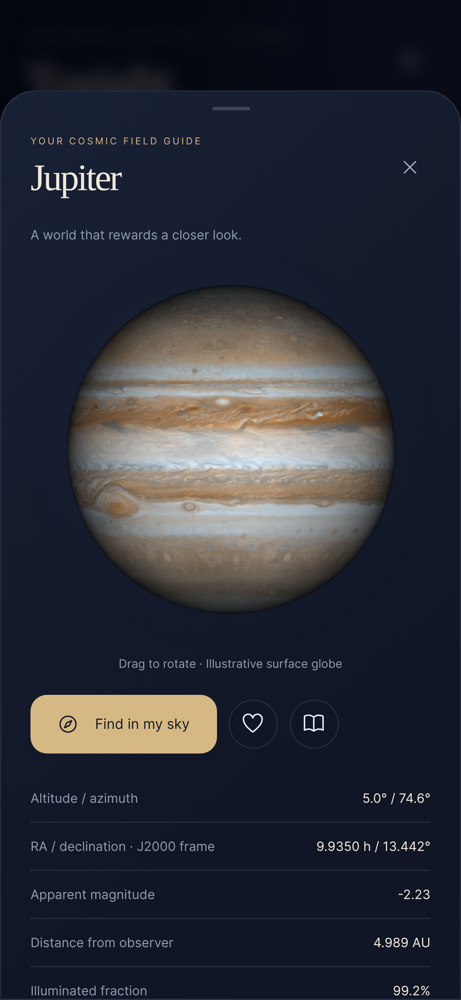
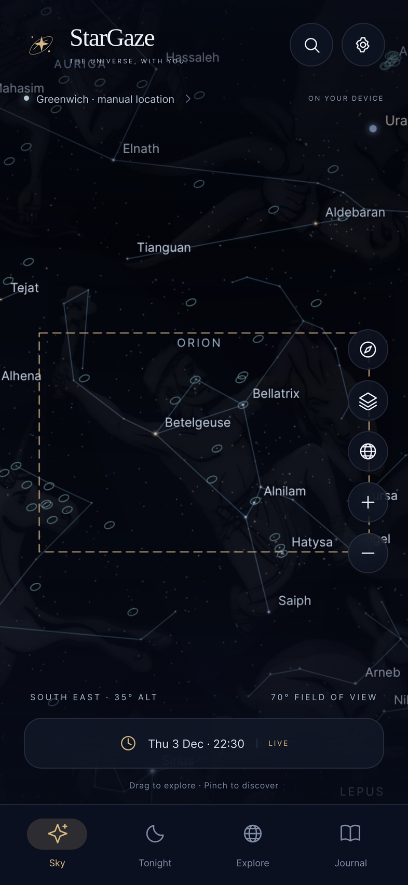
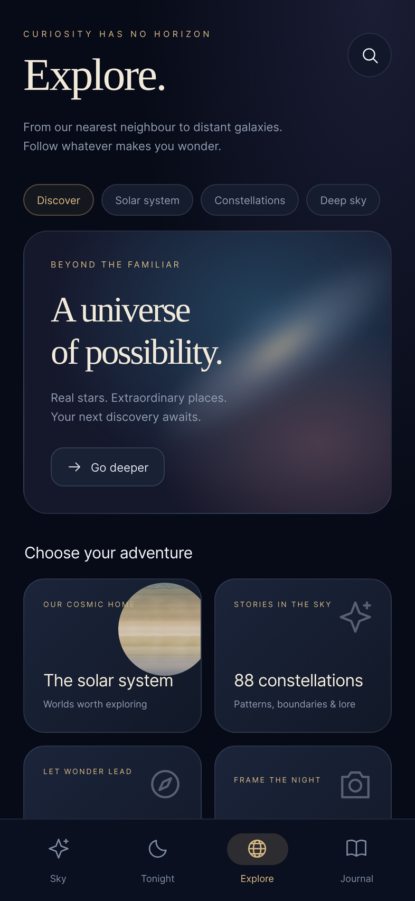
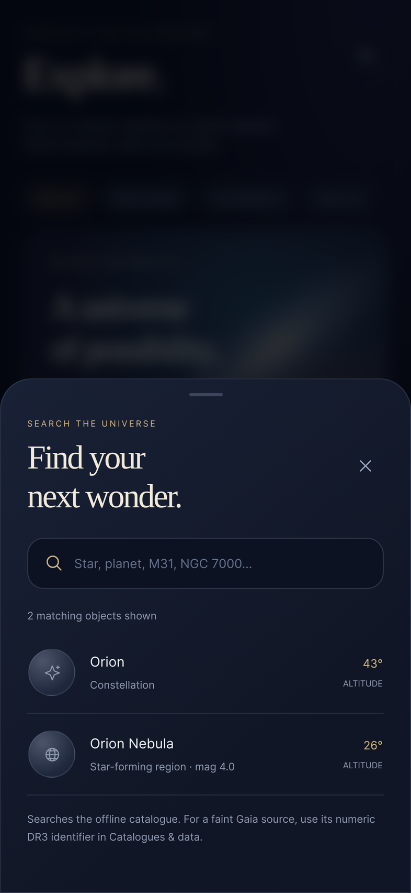
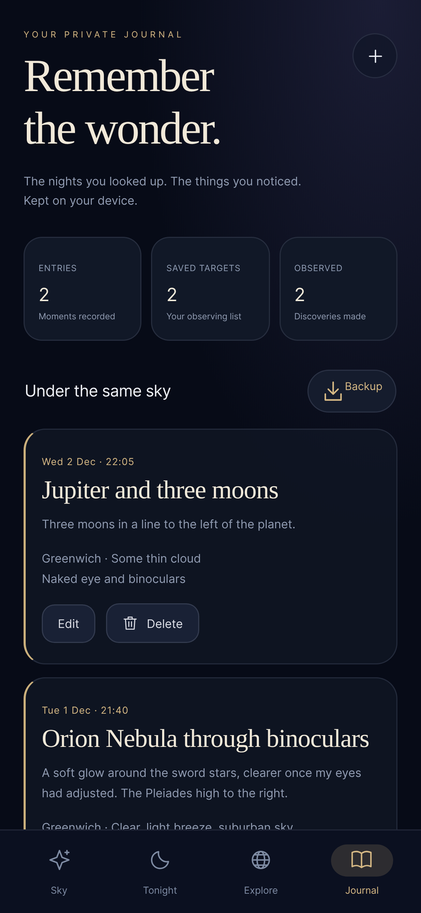
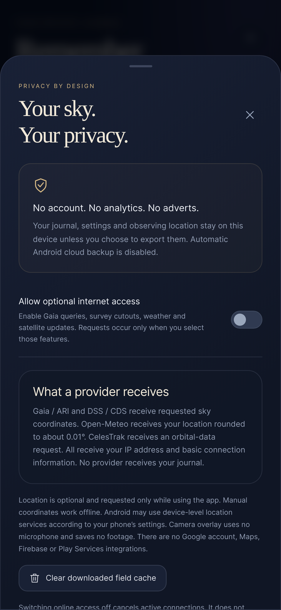

The night sky, on your terms.
StarGaze is a star map for Android that works without a connection. Hold your phone up and the sky follows it: stars, planets, the Moon, deep-sky objects and the 88 constellations, in the right place for where you are and when.
It is free, with no adverts, no account and nothing to unlock. Online extras are off until you choose them, and your journal never leaves your phone.
Download for AndroidHow to install
- Version 2.0.0
- Android 11 or later
- 60.6 MB
Free, with nothing to unlock. No adverts, no account with the developer, no tracking. Compare or read the release notes.
Chrome may say the file might be harmful. It shows this for app files that do not come from Google Play. Choose Download anyway.

- No advertsNone in the app and none on this site.
- No accountOpen it and look up.
- Works offline2.5 million stars, 89,868 deep-sky objects and 320 photographs are in the app.
- Online is offExtra catalogues, weather and imagery only when you switch them on.
A look inside
These are the real screens, drawn from the app's own files on a December evening at Greenwich. Swipe or scroll sideways to see them all.







How it works
Nothing to sign up for. Open StarGaze and the sky is there.
Set your place
Pick a town, type coordinates, or ask for a one-off fix from your phone. Location permission is optional.
Look up
Tap the compass and point your phone at the sky, or drag and pinch the map. Tap anything to find out what it is.
Plan the night
Tonight ranks what is worth looking at. Save targets, set a reminder, frame a photo and write up what you saw.
Everything is in, and all of it is free
Nothing below is held back for a paid tier, because there is no paid tier.
The sky on your phone
- 2.5 million stars
- From the HYG and AT-HYG catalogues, with their real colours, shown deeper as you zoom in, plus names for the bright ones.
- 89,868 deep-sky objects
- Galaxies, nebulae and clusters, with all 110 Messier objects, and real photographs of 320 of them that fade in as you zoom.
- All 88 constellations
- Lines, official boundaries, asterisms and the classic western artwork pinned to its stars, showing the constellation in the middle of the screen, or the traditional Chinese sky.
Our solar system
- The Sun, Moon and planets
- Worked out on your phone for any date from 1900 to 2100, drawn at their true size when you zoom in, with the Moon's phase facing the Sun.
- Globes you can turn
- The Sun, Moon and planets as globes, the Moon lit for tonight's phase, and an orbit view of the inner and outer planets.
Plan a night out
- Tonight
- The Moon's phase, sunset and full darkness, and a ranked list of what is above your horizon.
- 24-hour views and a sky calendar
- How high any object climbs over the day and night, plus Moon phases, eclipses, solstices and meteor showers, with reminders.
- Photo planner
- Your camera and lens drawn on the sky as a frame, with a 2 × 2 mosaic and a starting exposure.
Point and find
- Phone pointing
- Hold your phone up and the map follows it, corrected for true north where you are.
- Camera view
- Optional: the sky drawn over your camera's picture, matched to its field of view. Nothing is recorded.
Go further, if you want
- Gaia, SIMBAD and NASA JPL
- Load faint stars from Gaia DR3 a region at a time, more deep-sky objects from SIMBAD, and comets, asteroids and moons from NASA JPL. Saved for offline use.
- Weather, satellites and sky cultures
- An Open-Meteo cloud forecast, satellite passes from CelesTrak, 37 more sky cultures and DSS survey photos.
Private by design
- Online access starts off
- Every online feature waits until you switch it on, and switching it off stops any request in progress.
- Your journal stays yours
- Journal, list and settings live in the app's private storage. Phone backups leave them out. Export a backup file when you want one.
Your sky, not your data
No account, no tracking
No sign-up, adverts, analytics or advertising ID. The developer receives nothing.
Offline first
The sky, search, planner and journal all work with no connection. Online access is off until you turn it on.
Location is optional
Choose a place by hand, or ask for a one-off position. StarGaze never uses background location.
Installing and updating
StarGaze is not on Google Play, so your phone asks a couple of extra questions the first time.
Download the app file
Tap Download on your phone. The file is called StarGaze.apk and is about 60.6 MB. If Chrome says the file might be harmful, choose Download anyway.
Allow the install
Open the file. The first time, Android asks you to allow your browser to install apps. Allow it, go back and tap Install. If Google Play Protect steps in, choose More details, then Install anyway.
Updating later
In StarGaze, open Settings and tap Check for updates. With online access on, it asks GitHub for the newest version; with it off, it opens this site's releases page. Install the new file over the old one and your journal, list and settings are kept.
Version 2.0.0, released 26 November 2026. See the release notes, or check your download.
Questions
Is StarGaze really free?
Yes. There is no paid version, no subscription and no adverts, and nothing in the app is locked.
Is it on Google Play?
No. StarGaze is a personal project and is downloaded from this site as an Android app file. It needs Android 11 or later and an up-to-date Android System WebView, which comes with every current phone.
Does it need the internet?
No. The stars, deep-sky objects, constellations, planets, Tonight, search, journal and planner all work offline. Online access starts switched off. Turn it on in Privacy & data only if you want Gaia stars, SIMBAD, NASA JPL objects, survey photos, weather, satellite data or extra sky cultures.
Does it need my location?
No. You can choose a town or type coordinates. If you tap Use device location, Android gives StarGaze one position, which is saved as your observing place. It never runs in the background.
How accurate is it?
Positions of the Sun, Moon and planets come from Astronomy Engine, and star positions from the HYG catalogue with each star's own motion. Phone pointing depends on your phone's compass, which metal, magnets and cases can upset. Calibrate it with a figure-of-eight movement.
Can it control my telescope?
No. StarGaze has no telescope control, by design.
What does a service see when I go online?
Your IP address and what that request needs: a patch of sky for Gaia, SIMBAD and survey photos, an object, time and your place for NASA JPL, your place rounded to about 1 km for the weather. Your journal is never sent anywhere.
Are the planet globes real photos?
They are maps of each world wrapped on a globe, to explore at your leisure. The Milky Way, landscapes and Saturn's rings are illustrations.
Do the satellite passes tell me what I will see?
They tell you when a satellite is more than 10° above your horizon. They do not say whether it is lit by the Sun, so not every pass is visible.
How do I keep my journal safe?
Settings, Backup & restore exports your journal, list and settings to a file where you choose. The file is not encrypted, so keep it private. Uninstalling StarGaze removes anything you have not exported.
How do I get new versions?
Open Settings and tap Check for updates. With online access on, StarGaze asks GitHub for the newest version and opens the download in your browser. With it off, it opens this site's releases page. Install the new file over the old one.
Who made it?
StarGaze is made by Jonathan Jackson, an independent developer in the United Kingdom. It is not connected with Stellarium, ESA, NASA, CDS or any of the data providers it credits.
Look a little further
Free, with no adverts and nothing to unlock. Made by the developer of several other free Android apps: see them all.